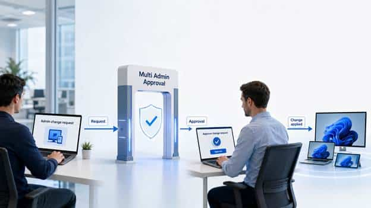
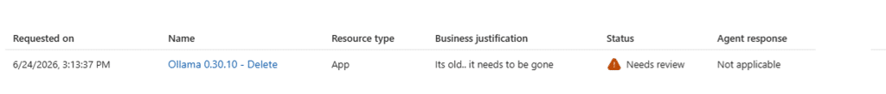
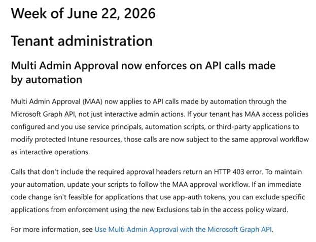
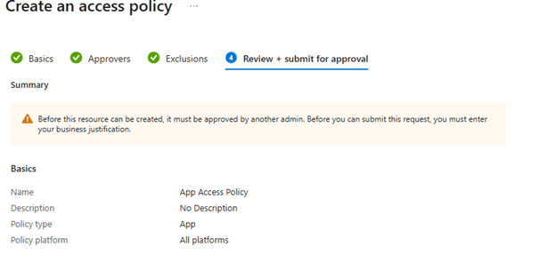
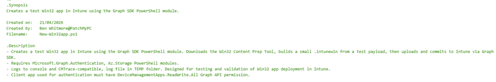
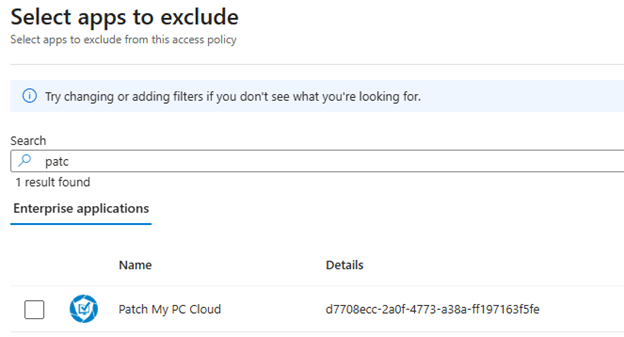
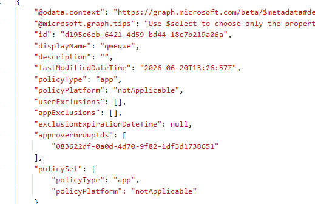

This blog is about the moment Microsoft expanded Multi Admin Approval to app-based Graph automation, and how Intune app updates suddenly began failing with the x-msft-approval-justification error. We’ll show what changed in App MAA enforcement, what the x-msft-approval-justification error looks like, why Intune app automation started failing, and how the new app exclusion keeps trusted patching automation running.
Introduction
Some security features only get interesting when something breaks. Multi-Admin Approval in Microsoft Intune is one such feature. At first glance, it sounds simple. One admin wants to make a sensitive change. Another admin needs to approve it before Intune applies that change.


That is it. No magic. No fancy dashboard. Just another person standing between a request and the button that can change something important in your tenant. And honestly, that part makes sense.
Why Microsoft Is Pushing Multi-Admin Approval
Microsoft is pretty clear about the reason. Multi Admin Approval, or MAA, is designed to help protect Intune against a single compromised administrative account.

If one admin account gets stolen, that account should not be able to quietly make high-impact changes on its own.
That is exactly why the Stryker incident ended up in so many Intune security discussions. Stryker confirmed a cyberattack caused a global disruption to its Microsoft environment. Public reporting then linked the disruption to abuse of Microsoft Intune, with reports saying attackers compromised an Intune admin account and used it to trigger a large-scale device wipe. Some reports mention around 80,000 wiped devices, while the attacker claims went as high as 200,000. So I would not treat every number as gospel, but the lesson is clear: a trusted management tool can become a weapon when the admin identity behind it is compromised.
That is where MAA comes in. After that type of incident, many organizations began to view Multi Admin Approval differently. Not as another annoying checkbox, but as a way to prevent one compromised admin account from immediately triggering something destructive. With MAA enabled for device actions, a wipe request does not run automatically just because one admin account requested it. A second admin has to approve it first.

Multi Admin Approval helps with that. But we also need to stay honest. Multi-admin approval does not solve every single security problem. It does NOT stop the first account from being compromised, and it does not replace all other security measures you should have in place. It is another barrier. A useful one, yes. But still a barrier.
The Four Eyes Principle In Intune
MAA is essentially the four-eyes principle in Intune. One admin creates the request. Another admin reviews it.


If it makes sense, the request gets approved. If it looks wrong, unexpected, or does not match the change ticket, it can be rejected. That is the clean version of the story.

In practice, the requester still needs to finish the change after approval. So the flow is not just approved and done. The original admin submits the change, the approver approves it, and then the requestor completes it so Intune can apply the change.
That extra step is important. It gives organizations a place to slow down risky changes before they become real. And when we are talking about wipe, retire, delete, scripts, apps, or RBAC changes, slowing down is not always a bad thing.
The old multi-admin approval behavior was easier to understand
Historically, Multi Admin Approval mostly made sense in the portal world. An admin opened the Intune admin center, changed an app, submitted the request, and another admin approved it. That flow can be annoying when you are in a hurry, but at least it is easy to understand. A human asked for a change. Another human approves it…. Yes, IT Admins are human beings…
That was also why many automation flows were NOT affected before. Third-party tools using application authentication, service principals, or app registrations could still do their job because they were not acting as a signed-in delegated admin.
For third-party patching products, that distinction mattered a lot. Patch automation is not someone manually editing one app at a time. It is a service principal or app registration that creates and updates Intune apps, assignments, metadata, detection rules, and content via Microsoft Graph. That is the whole point.
Then Microsoft Changed The Scope
Microsoft has now documented that Multi Admin Approval also applies to automation using Microsoft Graph.


That includes service principals, automation scripts, and third-party applications when they modify protected Intune resources. Read-only calls are not affected, but writes, such as create, update, assign, delete, or similar changes, can be intercepted.
That is the part that changes the conversation. This is no longer only about admins clicking around in the Intune portal. This is now also about every tool that writes into Intune through Graph. And yes, for a third-party patching company, that becomes a problem very quickly.
If an App MAA Access policy protects Intune apps and a patching product attempts to create or update a Win32 app, the request can fail unless the automation supports the MAA approval flow or the application is excluded from enforcement.


Microsoft documents both paths: update the automation to use the approval workflow, OR exclude a specific application from MAA enforcement when that code change is not immediately possible.

This is also why some older MAA guidance is now outdated. Earlier, it was fair to say that App Registrations and service principals were not covered in the same way as delegated admin actions were. That changed. App authenticated Graph calls are now part of the story.
The x-msft-approval-justification Multi Admin Approval error
This is where most admins will first notice the change. Not in a nice warning. Not in a clean message saying your automation is now waiting for approval. It usually starts with a failed Graph call.
When an application attempts to modify a protected Intune resource and Multi Admin Approval is in the way, Microsoft Graph can return an error indicating a missing approval header. The important part is that this is not always a normal permission problem. It can mean the request was caught by MAA and now needs to go through the approval flow.
The error you want to look for is this one: Header ‘x-msft-approval-justification’ is required to request approval

That is the money shot. If you are troubleshooting Intune automation and you see x-msft-approval-justification, you are not just looking at a broken Graph request. You are looking at Multi Admin Approval enforcement.
The app may still have the correct Graph permissions. The token may still be valid. The service principal may still be allowed to manage Intune apps. But MAA is now standing between the request and the actual change.
Microsoft also documents that the first request needs a Base64 encoded x-msft-approval-justification header. After approval, the original request must be sent again with the x-msft-approval-code header. That flow makes sense when you own the automation code and can build the approval workflow around it.
It becomes a lot harder when the automation is part of a third-party patching product that is expected to run quietly in the background. That is why the x-msft-approval-justification error matters. It tells you this is not just Microsoft Graph being broken. It may be Intune Multi Admin Approval doing exactly what it was told to do.
The Multi Admin Approval x-msft-approval-justification Test.
To test it, we used a small test script. The important part is not the test app itself. The important part is how the script authenticates.


It does not use a signed-in Intune admin clicking around in the portal. It uses app auth. You feed it a tenant ID, an app ID, and a client secret. The app registration needs DeviceManagementApps.ReadWrite.All, and then the script connects to Microsoft Graph using the client secret credential.
That matters because this is exactly the kind of flow many automation tools use. The script then builds a small .intunewin package, creates a Win32 app record in Intune, creates a content version, uploads the content to Azure Storage, commits the file content back to Intune, waits for commitFileSuccess, and finally updates the Win32 app with the committed content version.
That last part is where the fun starts. The package was uploaded. The commit came back as successful. The file state showed commitFile Success and then the final PATCH request failed. Not because the package was broken, or because the app registration suddenly lost access. It failed because Multi Admin Approval stepped in.

The Before And After x-msft-approval-justification Proof
This is where the theory becomes visible. In the failing run, the script already uploaded the Win32 content. The blocks were committed to Azure Storage. The upload state was verified. The commit request was sent. Intune returned commitFileSuccess.

So the content pipeline did its job. The failure happened when the automation tried to update the Win32 app with the committed content version. MAA Graph error before exclusion. The important part is this message: Header ‘x-msft-approval-justification’ is required to request approval

That tells us this is not a normal Win32 app upload issue. It is Multi Admin Approval enforcement. You can see the same type of response in Graph as well. The request fails with Bad Request 400, and the response body points directly to the missing MAA approval header. If you see x-msft-approval-justification in the error, you are no longer looking at a generic Graph permission issue. You are looking at an Intune change that is being forced into the Multi Admin Approval flow.
The Fix For x-msft-approval-justification
To fix this x-msft-approval-justification MAA issue you need to add the enterprise application exclusion that Ben also mentions in the Patch My PC KB


After adding the Patch My PC Cloud Enterprise Application to the exclusions, the same app auth flow completed successfully.

That is the difference the exclusion makes. MAA still protects the workload, but the trusted automation identity is no longer required to go through a manual approval flow. For patching, that distinction matters. You keep the approval barrier for risky human changes, but you do not turn every normal app update into a stuck approval request.
Automation Is Now Part Of The App MAA Story
From a security perspective, I get it. A service principal with write access to Intune apps is powerful. If that identity is abused, someone could change what gets deployed to devices. Microsoft saying app write actions should also be governed is not strange. But this is where the App MAA access policy starts to hit automation.
It is not only commercial third-party patching products. It also affects internal scripts: app assignment updates, Win32 app creation, metadata changes, or that small helper tool someone built because the portal takes too long. If that automation uses app-based authentication and writes to Intune apps protected by an App MAA access policy, it must now understand the MAA approval flow or be excluded from that policy.
That is where patching gets tricky. During testing, the failure occurred when the script attempted to PATCH the Win32 app object with the committed content version. Because that PATCH is an app write action covered by App MAA, Intune expected an x-msft-approval-justification header. Without that header, the request failed. That is the difference.
This does not silently become a nice pending approval unless the automation was built to request approval in the first place. Without that MAA aware request flow, the app update just fails. For patching automation, that matters. A normal app update, assignment change, metadata change, or content version update can stop at the Graph request if it is protected by App MAA and the automation does not send the required approval headers.
That is not great for patching, and it is not great for app automation in general. If it writes to Intune apps, and an App MAA access policy protects that workload, it is now part of the Multi Admin Approval story.
Multi Admin Approval App Access Policy Exclusion
The practical answer for trusted automation is the exclusion that just showed up in your tenants!!

Microsoft added the option to exclude specific enterprise applications from MAA enforcement for app-authenticated calls. Funny enough, the App Exclusion option already showed up before the flow fully worked. You could see the setting, but Graph still did not allow the PATCH to go through. That changed once Microsoft finished rolling out the app exclusion behavior.


Note: Did you also spotted the userExclusion?? –> Select users that will be excluded from requiring Multi Admin Approval for this policy. This also impacts delegated authentication using user credentials.
But with the App Exclusion active for the App MAA policy, customers can keep Multi Admin Approval enabled for human admins while still allowing trusted automation to continue running.
That is the balance. You do not disable the entire security feature just because patching needs to work. You exclude the trusted app identity that performs the patching automation while keeping the rest of the MAA policy in place.

Multi-Admin Approval Needs A Real Process
The mistake would be treating MAA as a checkbox. If you enable it without thinking, you can break automation. If you protect RBAC before your approver groups and role assignments are correct, you can create your own admin headache. Also, if no one monitors the approval queue, urgent changes can sit there. If every normal patching update needs manual approval, your patch process becomes slower by design.
So yes, enable Multi Admin Approval where it makes sense. Implement it for high-impact areas. Use it for wipe, retire, delete, scripts, apps, RBAC, and other sensitive Intune changes where a second set of eyes makes sense.
But also document who approves, how fast they approve, document what gets excluded, and document which automation identities are trusted. Security without process just becomes another place where things fail quietly.
The Real Multi Admin Approval Takeaway
Multi Admin Approval is NOT bad. Microsoft recommending it is not strange. Intune has too much power for one compromised admin account to be the only thing standing between an attacker and a destructive change.
But MAA is not the whole castle. It is one more gate.
For human admin actions, that gate makes sense. Automation needs more care. Third-party patching tools do not work like a person in the portal. They need predictable Graph access to keep apps updated and devices patched. That is why the MAA App Access Policy exclusion story matters so much.
Because at the end of the day, a security feature that delays patching can become a risk in itself.